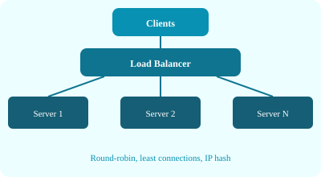

Every device on a network is identified by an IP address (IPv4: 32-bit, e.g., 192.168.1.1; IPv6: 128-bit). IP handles routing packets from source to destination, but does not guarantee delivery, ordering, or error correction — that is left to higher-layer protocols.
DNS translates human-readable domain names (example.com) into IP addresses. It uses a hierarchical system: root servers → TLD servers (.com, .org) → authoritative name servers. DNS caching at browsers, OS, ISPs, and CDNs reduces latency.
# Simplified DNS resolution flow
User types "api.example.com"
Browser checks local cache → OS cache → recursive resolver
Recursive resolver queries root → .com TLD → example.com authoritative
Authoritative server returns IP 93.184.216.34
Browser opens TCP connection to that IPThe client sends a request; the server processes it and sends a response. This is the foundation of web communication. Variations include thin clients (browser), thick clients (mobile app), and peer-to-peer models.

Load balancers distribute incoming traffic across multiple backend servers to ensure no single server is overwhelmed. Common algorithms:
| Algorithm | Behavior | Use Case |
|---|---|---|
| Round Robin | Cycles through servers in order | Similar-capacity servers |
| Least Connections | Sends to server with fewest active connections | Variable request durations |
| IP Hash | Hashes client IP to pick a server | Session persistence (sticky sessions) |
| Weighted Round Robin | Servers get traffic proportional to assigned weight | Heterogeneous server capacity |
An API gateway sits between clients and backend services. It handles cross-cutting concerns: authentication, rate limiting, request routing, protocol translation, logging, and aggregation. Unlike a load balancer (which focuses on traffic distribution), a gateway is often application-aware.
Common tools: AWS API Gateway, Kong, Apigee, Azure API Management.
A CDN is a distributed network of edge servers that cache static content (images, CSS, JS, videos) geographically closer to users. This reduces latency, offloads origin servers, and can handle traffic spikes. Key concepts: edge node, origin pull, cache TTL, cache invalidation, POP (Point of Presence).
# CDN Request Flow
User in Mumbai requests image.png
DNS resolves to nearest CDN edge (e.g., Mumbai PoP)
Edge checks cache:
- Hit: serves cached copy (fast, ~5ms)
- Miss: forwards to origin, caches response, serves user